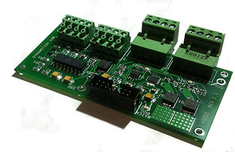

KNozz is the latest edition to our line-up designed to control the Nozzle Heater and Bed Heater for an Extrusion Type 3D Printer.
KNozz provides two Thermistor Inputs to allow KFLOP to monitor the temperature of both the Extruder Nozzle and Bed Heater Platform. 12-bit ADC converter provides better than 1 degree C temperature repeatability.
Two High Current, Independent, and Optically Isolated FET switches allow controling the Nozzle and Bed Heaters. Super low on resistance of only 2.1 milli-ohms permits continuous currents of upt to 20 Amps with no heat sinking required. Channels isolated from each other and may use separate supplies.
Safety Watchdog automatically disables heater outputs whenever temperatures are not being actively monitored.
An additional opto-isolated analog output is provided for general use.
3 LED status indicators for: Watchdog Enable, Nozzle Heat Powered and Driven, Bed Heat Powered and Driven,
Simple 16-pin ribbon connection to KFLOP JP4 provides logic power and data communication to/from KFLOP.
CNC Application Note: KNozz may also be used in CNC Applications to provide an isolated analog Spindle Speed Output, two isolated switches for Spindle On/Off/Direction Control, and 2 analog inputs for FRO and SSO potentiometer inputs.
See also: Converting a milling machine to a 3D printer in 3 easy steps.
Features: